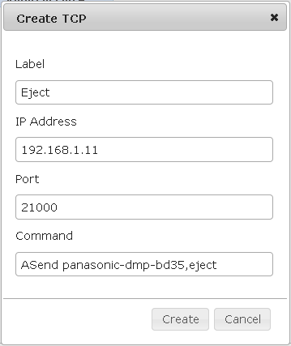

Hello,
i have up and runnung an OpenRemote.Boss_1_0_2 Server (running on Windows) who works very well with my KNX Network over an ABB IP-Router. Now I want to enhance my installation to additionaly send IR Commands to my HomeCinema. I bought an IRTrans LAN-DB Module and load it with all my Remote Controller Commands . With http Links to the IRTrans LAN-DB Module, I can successful send all IR-Commands to my equipment (e.g. http://192.168.1.11/send.htm?remote=panasonic-dmp-bd35,command=Power%20on. If I try to send TCP/IP Commands from the OpenRemote Boss Server to the IRTrans Module nothing happens and an Java Exception occure:
[Controller]2010-04-19 18:11:31,429 ERROR [HTTP-Thread-5] org.openremote.controller.protocol.socket.TCPSocketEvent.exec(143) | Socket event could not execute
java.net.ConnectException: Connection refused: connect
at java.net.PlainSocketImpl.socketConnect(Native Method)
at java.net.PlainSocketImpl.doConnect(Unknown Source)
at java.net.PlainSocketImpl.connectToAddress(Unknown Source)
at java.net.PlainSocketImpl.connect(Unknown Source)
at java.net.SocksSocketImpl.connect(Unknown Source)
at java.net.Socket.connect(Unknown Source)
at java.net.Socket.connect(Unknown Source)
at java.net.Socket.<init>(Unknown Source)
at java.net.Socket.<init>(Unknown Source)
at org.openremote.controller.protocol.socket.TCPSocketEvent.exec(TCPSocketEvent.java:131)
at org.openremote.controller.service.impl.ButtonCommandServiceImpl.trigger(ButtonCommandServiceImpl.java:67)
at org.openremote.controller.rest.ButtonCommandRESTServlet.doPost(ButtonCommandRESTServlet.java:84)
at javax.servlet.http.HttpServlet.service(HttpServlet.java:637)
at javax.servlet.http.HttpServlet.service(HttpServlet.java:717)
at org.apache.catalina.core.ApplicationFilterChain.internalDoFilter(ApplicationFilterChain.java:290)
at org.apache.catalina.core.ApplicationFilterChain.doFilter(ApplicationFilterChain.java:206)
at org.springframework.web.filter.CharacterEncodingFilter.doFilterInternal(CharacterEncodingFilter.java:78)
at org.springframework.web.filter.OncePerRequestFilter.doFilter(OncePerRequestFilter.java:77)
at org.apache.catalina.core.ApplicationFilterChain.internalDoFilter(ApplicationFilterChain.java:235)
at org.apache.catalina.core.ApplicationFilterChain.doFilter(ApplicationFilterChain.java:206)
at org.apache.catalina.core.StandardWrapperValve.invoke(StandardWrapperValve.java:233)
at org.apache.catalina.core.StandardContextValve.invoke(StandardContextValve.java:191)
at org.apache.catalina.core.StandardHostValve.invoke(StandardHostValve.java:128)
at org.apache.catalina.valves.ErrorReportValve.invoke(ErrorReportValve.java:102)
at org.apache.catalina.core.StandardEngineValve.invoke(StandardEngineValve.java:109)
at org.apache.catalina.connector.CoyoteAdapter.service(CoyoteAdapter.java:286)
at org.apache.coyote.http11.Http11Processor.process(Http11Processor.java:845)
at org.apache.coyote.http11.Http11Protocol$Http11ConnectionHandler.process(Http11Protocol.java:583)
at org.apache.tomcat.util.net.JIoEndpoint$SocketProcessor.run(JIoEndpoint.java:354)
at java.util.concurrent.ThreadPoolExecutor$Worker.runTask(Unknown Source)
at java.util.concurrent.ThreadPoolExecutor$Worker.run(Unknown Source)
at java.lang.Thread.run(Unknown Source)
In the Composer I have filled in the following data:

Is it necessary to install an additional Software on the Server? Is it right to use "TCP/IP" for the Communication to the IRTRANS-LAN-DB Module? Is it possible to test an TCP Socket connection to the IRTrans Module with an tool like putty or telnet?
In the IRTRANS Documentation I read, that the Socket Connection have to be opend with an ASCI Command. How can I do this over OpenRemote?
I hope this are not to much questions. But I can't find any Info about this in the Forum or at the IRTrans Website.
regards,
Frank
{kind=link}